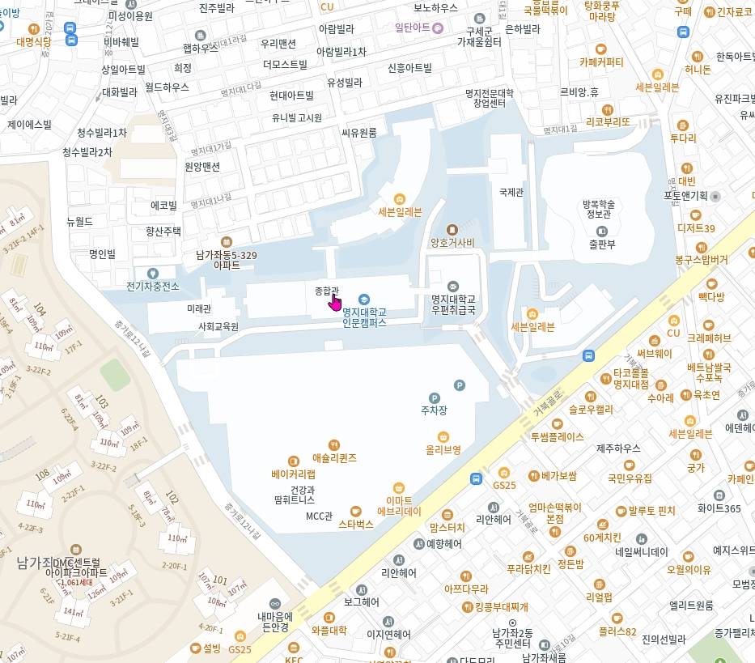

ㅇ 지역의 미래: 빅데이터 기반의 도시·농촌·남북한 거버넌스
2026. 05. 22(금) | 명지대학교 종합관
본 학술대회는 급변하는 사회·경제 환경 속에서 나타나는 지역의 구조적 변화와 미래 발전 방향을 종합적으로 논의하기 위해 개최된다. 도시와 농촌의 공간 변화, 남북한 거버넌스, 지방행정 혁신, 초광역권 형성, 지방소멸 대응 전략, 그리고 AI와 빅데이터 기반 지역연구 등 다양한 주제를 통합적으로 조망함으로써 지역발전의 새로운 패러다임을 모색하고자 한다. 특히 학계와 정책연구기관, 지역 현장의 전문가들이 함께 참여하여 지역문제 해결을 위한 학제적 협력과 정책적 대안을 제시하는 것을 목표로 한다.
장소: 종합관 201호
주소: 서울특별시 서대문구 거북골로 34 명지대학교 종합관
